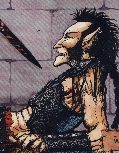

Les Terres de Kirin Tor
"Pile ou face"
Points : 8

Joué par :
[ Information masquée ]
Age : 32 (estimé)
Lieu de naisance : Stormwind
Signe de naissance : Singe (estimé)
Sexe : Homme
Race : Humain
Faction : Alliance
Formation : Voleur
Niveau : 60
Guilde : Oeil du Crépuscule
Artisanat 1 : Enchanteur
Artisanat 2 : Artisant du cuir
Envoyer un MP
Informations hrp : Bonjour, de vives lames a votre service, et une execution rapide et efficace pour vos contrats. n'hesitez pas a me contacter! il y a toujours une personne dont on aimerait se debarrasser
Description : "rooh mais laissez moi donc tranquille, je n'ai que faire de vos supplications, et puis c'est bien votre faute si j'ai due trancher votre tete de mort vivant, quelle idée de se mettre un contrat a dos,....."
"Pile ou Face........un surnom tout au plus, mais si vous y tenez tant que cela je ne vois pas pourquoi je ne vous parlerais pas plus de moi...." Pile ou Face est dans le darkshire, assis pres du feu qu'il vient de faire craquer; il vient de recuperer une prime assez speciale, il est vrai: une tete de mort vivant qui continue de parler...voila qui le change de ses habitudes.
Alors que les deux comperes (l'un dans le sac de transport et l'autre confortablement installé sur une couverture sèche aupres de feu de camp, se curant les dents avec une brindille de la maniere la moins classe posible) se reposent de leur longue marche, ne voila pas que la tete se met a devenir curieuse....
" oh il n'y a pas grand chose a dire vous savez, je suis gredin et l'ai toujours été aussi loin que je me souvienne, il en est ainsi lorsque l'on nait au nord du quartier du canal a stormwind....vos reves se limitent a un etal bien fourni et sans surveillance.....je n'ai jamais eu besoin de rien d'autre que ce que mes larcins me procuraient et j'ai vecu ainsi pendant longtemps; puis avec le temps et une reputation grandissante aupres des services d'ordre de la cité j'ai du me resigner a quitter la capitale pour ..."prendre du recul" disons....j'ai bourlingué, et vu du pays.....j'ai meme poussé mes pas vers le nord, dans ce qu'ils appellent les malterres.....et j'en suis revenu avec ces deux épées *regarde ses deux épées briller...*...je ne parviens d'ailleurs pas a me rappeler de ou je les ai eu, et dans quelles circonstances..mais qu'importe, elles m'ont sauvés la mise en de multiples occasions et le referont encore j'en suis sur.......mais arretez d'insister puisque je vous dis que je ne sais pas d'ou elles viennent....donc..je disais...oui apres moultes contrats, employeurs, primes, et victimes, je me suis dis qu'il me fallait trouver un emploi serieux et honnorable, ne serais ce que pour faire plaisir a feu ma bonne mere, et voila, ainsi j'ai rejoins les rangs de ces gars, les "orphelins de hyjal", ils sont sympatiques et visiblement dignes de confiance, du coup j'ai aps trop hesité.....enfin voila à présent si vous le permettez je vais dormir, demain il y a encore du chemin avant d'arriver dans les carmines et j'aimerais y etre assez tot!......bonne nuit tete a la langue bien pendue...."
Pile ou face ne l'entendra pas mais la tete lui repondra doucement " c'est toi qui a la langue bien pendue pauvre fou..."
Le lendemain pilou se rend dans les carmines et arrive chez le sénéchal:
" b'jour, v'la la prime que vous recherchiez et je vous previens c'est la derniere fois que vous m'envoyez tuer du mort vivant sans me le dire, ce zigoto m'a cassé les pieds sur tout le chemin du retour..." pilou jette le sac sur le bureau du sénéchal, prend les pieces d'or et repart aussitot laissant le fonctionnaire un peu surpris " mort vivant ? mais il n'a jamais été question de mort vivant..." le sénéchal ouvre le sac pour verifier les dires du larron, et ne trouve que la tete bien froide et figée de la prime... "encore un gars qui abuse trop de la bouteille" se dit le sénéchal "mais dans quel etat a t'il due se mettre pour entendre cette tete parler..."
Loin, dans une dimension interdite, au plus profond des ténèbres, un rire se fait entendre, le rire d'une puissante entité,visiblement tres satifsfaite,...."enfin ... enfin je sais ou elles sont!.....les "deux soeurs" seront bientot a moi....bientot....tres bientot..."
Age: 32 ans (estimé)
Alignement: chaotique neutre
Description: Pilou est brun au cheveux épais gras et long, dans lesquels se balladent tresses ficelles de couleur sombres, bijous en os et autres ustensiles..il porte une barbe assez mal taillée.... il est d'une corpulence assez fine et seche, adaptés a ses qualités d'assassins....il doit atteindre les 1m78...et porte toujours deux épées sur lui, les épées semblent animées d'une vie indépendante et toujours luir de maniere menaçante.....
Quatrième Ère [1]
Lune de la Force
Décade du Panda
Décade du Gorille
Décade de l'Ours
Lune d'Agilité
Décade du Tigre
Décade du Singe
Décade du Faucon
Lune de l'Esprit [1]
Décade de la Chouette
Décade de la Baleine
Décade du Lapin [1]
Un de moins.....
Le ciel est bas sur les malterres de l'est, sa couleur est aussi rouge que le sang des innocents et n'annonce aucune aube sereine...Cela fait deja plusieurs minutes que Pile ou Face est devant cette demeure délabrée...derriere lui des humaisn et autres combattants de l'alliance, tous reunis pour une cause unique, rapporter la tete d'un des contrats les plus juteux de ses derniers temps...mais si le contrat est juteux, la prime est un vrai cauchemard: un mort vivant du nom de Nathanos, un puissant guerrier, chevalier de la dame sombre.....
Tout devrait bien se passer...mais pile ou face ne le sent pas..une chose l'intrigue, une ombre , derriere leur cible....discrete et fine, semblant roder et attendre.....comme un felin aux aguets......
N'attendant pas d'etre prié, pile ou face decide d'aller voir ça de plus pres, et demande aux autres de l'attendre et de ne surtout pas le suivre....
Aussi discret que la chute d'une plume sur un tapis de neige, pilou contourne Nathanos qui, concentré sur le groupe d'humain qui s'apprete a l'attaquer, ne fait pas attention a cette ombre qui vient rejoindre la premiere derriere lui....
Voila...il est a quelques metres de cette ombre qui le travail depuis un bout de temps, il va pour la decouvrir....Horreur!! Un assassin de la horde, un pourvoyeur de mort, aux epaules rouges et flamboyantes.....cela n'annonce rien de bon...mais alors rien...mais cela était sans compter sur un des chasseurs du groupe avec lui; alors que pilou allait perdre la trace de la cible qui partait dans la maison gagner du couvert, une marque legere vint se poser sur une de ces epaulettes si effrayantes....mettant l'assassin au jour....aussito et sans demander son reste l'assassin rentre dans la maison et disparait une fois de plus....
Pilou le sait, ce danger potentiel doit etre eliminé avant l'assaut sur Nathanos....que faire?...
Le seul choix que ses épées lui sussure est bien sur de rentrer dans cette maison, quite a y trouver la mort.....
...Des années de poussières se sont depuis longtemps accumulées sur un sol en bois vermoulu, chaque pas est un defi a la discretion..mais si cela met pilou dans une situation delicate il se rassure en se disant que cela doit etre aussi le cas de son ennemi....
Les toiles d'araignée projetent, en masque de la lumiere de la lune blafarde, de droles d'arabesques sur les murs...parfois reguliere, parfois prise d'une folie sombre et indomptable.....elles semblent bouger...d'ailleurs elles bougent...oui elles bougent...mais ce ne sont point des arabesques gracieuses qui se decoupent sur ce mur mais bien la silhouette inquietante de l'assassin........qui apparait sous les yeux vitreux de pilou....un miracle qu'il ne l'ai pas encore vu...pilou se dit que sa chance est la.....il attends..encore quelques seconde....quelques souffles....puis saute sur son adversaire!!
Les "deux soeurs" s'illuminent et expriment toute leur rage au travers de tailles et d'estoc toutes plus meurtrieres les unes que les autres...les coups d'épée pleuvent.....et ce combat qu'il pensait perdu d'avance prend une tournure des plus inattendu...il a le dessus..il va gagner...le sang noir du mort vivant coule et souille meme le partere ignoble de cette ruine...ses epaulette si effrayante se ternissent souillées elles aussi par le sang de la creature......un dernier coup d'épée, l'assassin tombe sans un dernier souffle, comme un sac de patates qui tombe....inerte et démantibulé....
Pilou n'en revient pas.....il inspecte le corps inerte de son adversaire de tantot...il trouve une petite plaque de bronze passée autour des reste de coup du mort vivant...."Nattes" .... Alors v'la ton nom pourriture...
Pilou se releve et part rejoindre discretement ses compagnons de fortune ...il leur indique que la voie est libre.......l'ombre qui rode est assoupie pour toujours et je defi quiconque de la reveiller!!!